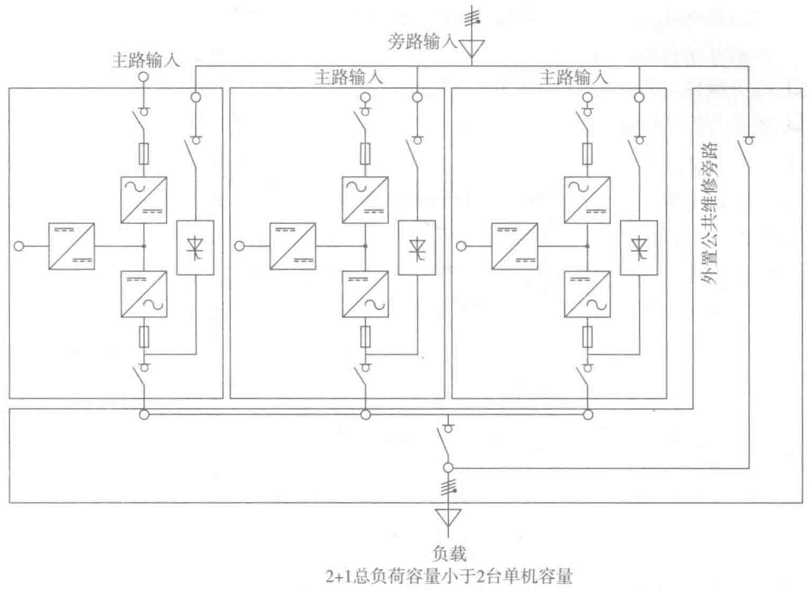
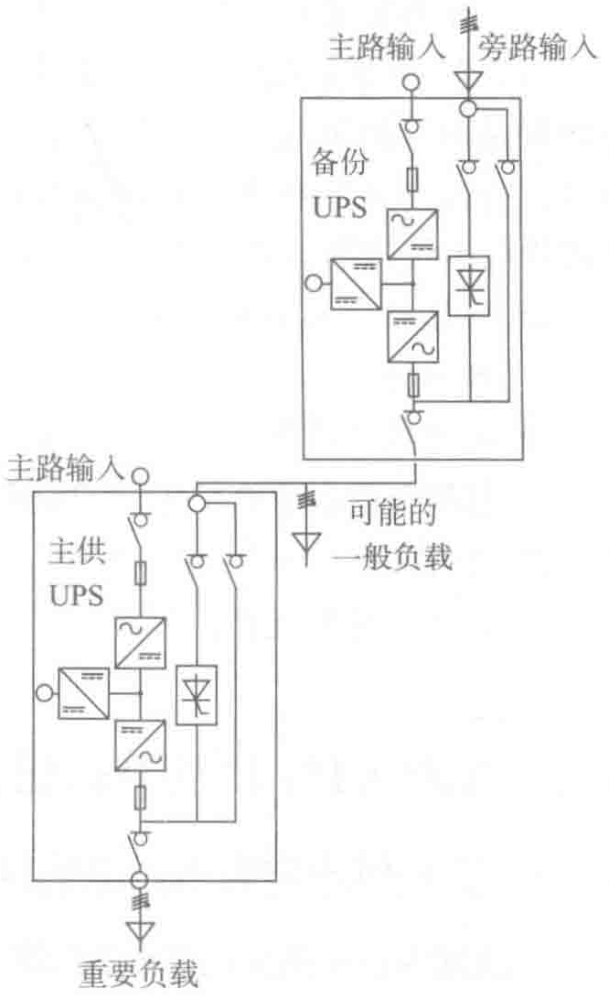

- 可用性：99.99970%，MTBF比单机UPS高6.8倍。
- 可维护性：在维护其中的一个单元时，负载供电仍然受到其他单元的保护。
- 对第一类负载（优先级负载），两个UPS单元具有相同的额定功率，但如果有第二类负载（可能的负载），备份UPS的额定功率也必须做相应的调整。
- 各UPS单元之间没有信号线。
（5）标准配置5：并联单元和公共静态开关柜（SSC）组成的主动冗余
图3-26所示是可以高达几MV·A的集中式配置方案。由于各UPS单元与静态开关柜（SSC）之间是互相独立的，从而达到极佳的可靠性。
- 可用性：99.99968%，MTBF比单机UPS高6.5倍。
- 可维护性：在维护其中的一个单元期间，